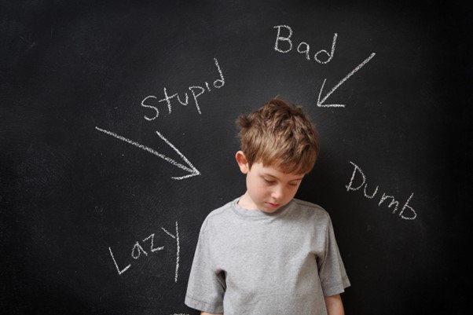

EMOTIONAL ABUSE IN CHILDREN
I have constantly been working with children and adolescents from three years to nineteen years in therapy. One thing that has consistently come out is that, children who had a difficult childhood have challenges as adolescents and even more challenges as adults. It is very clear that the parents and care givers do not understand the impact of child abuse on children. In many cases where child abuse happens, the adults taking care of this child do not either know it is abuse or they are in denial.
Issues that amount to child emotional abuse in young children.
- Domestic violence in a home and children raised by parents with addiction.
- Parents who are absent at home or who send children away to be cared for by other relatives.
- Child sexual abuse.
- Disciplining methods that instill fear, perfectionism, and over-pressurizing children.
- Denying children playtime.
- Bullying and criticism.
Domestic violence and children of parents with substance addiction
According to research done by UNICEF 2006, children in domestic violent homes are exposed to child emotional abuse. The results showed that these children are likely to suffer anxiety, lack of social skills, become delinquents, become aggressive or exhibit tendencies of violence. The children who grow up in homes rampant with domestic violence are too much exposed to emotional stress that may affect their brain, thinking and sensory system. These children live in fear and often times imagine that they could be the reason for the violence. In the inside, the child feels like they really can offer a solution to end the violence but realizing that they have no capacity, their level of anxiety and helplessness increase, leading them deeper to the constant feeling that they are indeed the problem. This forms the basis of child emotional abuse.
According to Bowlby, one of the theorists, infants and growing children need attachment figures, usually a parent and most commonly a mother. Such attachments boost the development process of the child and nurture them into productivity in later life. When a child experiences consistent present warmth, needs being met and parental/ guardian connection, the child thrives. In the absence of these, the child is said be experiencing child emotional abuse. Emotionally abused children who lack secure attachments in childhood replicate the same to the other people they encounter, both at adolescence and at adult life. Their relationships are marked by both clinging and detachment. The parents in families with domestic violence and addiction spend most of their time and energy trying to deal with the problem such that having attachments with their children becomes very difficult. It’s important to note that a parent can be present and still not form emotional attachments with the child. A parent needs to be psychologically well and deliberate to form these healthy attachments.
Sexual abuse
Child sexual abuse is a form of abuse on its own. We will still discuss it as a form of child emotional abuse because of the emotional impact it has on the child even in later life. Some of the areas that count for child sexual abuse, and not generally spoken about are; exposing adult genitalia to children, male adults holding young girls with an erect penis, sexual images that are age inappropriate, child witnessing adults having sex, inappropriate sexual touches to children, taking pictures of children sexual organs and use of children’s sexual organs to stimulate adults sexually among others. Research has shown that most child abusers are well known to the child. The parent and caregivers therefore need to be aware of what happens at the home environment.
In his book “healing the shame that binds” John Bradshaw brings out the effects of a wounded child that last till the child’s adult life. He says that a wounded child learns to internalize shame and as adults they become shameful individuals (individuals with toxic shame). These individuals find pleasure in controlling others and largely end up being abusers because of the shame they carry from childhood sexual experiences. It is this shame from past abuse that causes adolescents not to appreciate their sexuality and adults who are ashamed of their own sexuality.
Hard discipline, perfectionism and over pressurizing
When a child is exposed to methods of discipline that cause them emotion fear, we are simply telling the child that the environment they are in is not safe. This works in the same way as domestic violence causing a child emotional abuse. These Children grow up with self-doubt.
I have encountered parents who believe children need order just like adults. Order in feeding, in play, keeping the house clean and neat. I have experienced children visiting us being asked to sit and not move around and clearly that is not a child’s behavior. My response is, let children be. Am not suggesting indiscipline in any way, am talking about allowing a child to behave like one. When children are below 6 years, it is child emotionally abusive to deny them an opportunity to play and enjoy their childhood. Perfectionist parents make children grow up feeling “not good enough for not meeting standards”. They learn to improve performance so as to please parents, but find that even their best is not good enough. They are emotionally abused children, constantly trying to win approval and end up attracting abusers in their adolescence and also in adulthood. Emotionally abused children become “human doings” instead of “human beings”.
How do you then equip skills while allowing children to be children? Train the child what you expect of them to do, when they error, remind them again without anger. Do not be quick to punish as this will instill fear. Allow children to engage in their childlike activities, then teach them to organize the place once they are done, show them how to store their items so that they are learning how to be children but also how to organize later. As they learn to organize, appreciate the much they do, they are not meant to do it the same way you can /do it. Allow your children to know it’s okay to make mistakes as that makes them human and that they can learn from the mistakes and be better.
Children who are denied play
One day, I met a parent who really complained about the child coming home dirty after spending the day in a daycare, the child had no indications of being neglected, just dust and dirt out of play. That to me would mean that the caregiver allowed children their freewill to play. Further the parent mentioned that she comes home tired from work and so did not need additional work in cleaning. Children who are denied play time are emotionally abused children. Such children are not allowed to express emotions, which means they internalize them. Play is one major way of allowing children to express their emotions of anger, anxiety, fear, joy, sadness, excitement etc. Play allows children to learn creativity, decision making and how to solve problems. It helps their brain to develop and allows children an opportunity to learn social skills.
Emotionally abused children who are not allowed to express emotions grow up to be angry, hostile, aggressive adults who do not know how to express themselves effectively. Unexpressed negative emotions can lead to physical and mental illnesses. Research has showed that parents who are angry, resentful and wounded do not allow their children’s emotions. Emotionally abused adults raise emotionally abused children.
Bullying and criticism
Both bullied and heavily criticized children are candidates of child emotional abuse with similar psychological effects. Bullying is when children use words or actions against another or a group repeatedly causing the other distress. Criticism is when an adult is quick to give negative feedback on areas the child has not done well, without regard to the areas the child has done well. This is one common form of emotional abuse in schools. Recently, I have witnessed many cases of children below 10 years being brought for therapy because they have refused to go to school. It turns out that, these children have suffered bullying at school but the children were unable to share with parents for fear that the parents would scold them or they shared but the parents trivialized the experience as a small issue. These children grow up with much self-doubt, insecure, low self-esteem, anxiety and depression.
Signs of emotionally abused children.
- Bedwetting for children who had stopped wetting the bed.
- Illnesses that cannot be traced medically (psychosomatic) both in children and adolescents.
- Inability to relate with peers - they are largely isolated.
- Resistance to visit the places they experience emotional abuse - like refusing to go to school, refusing to visit some relatives.
- Trauma and post-traumatic stress disorder.
- Anger, tantrums, and much crying.
- Depressed and withdrawn moods.
- Delay in developmental progress.
- Loss of confidence.
- No interest in play.
- Asking help in tasks or areas that are already mastered, like dressing.
- Declined performance.
- Clinginess.
How to help emotionally abused children
- Offer a safe environment away from the abuse at home.
- Let your children know they will never be in trouble for sharing any secret with you. Be intentional in keeping that trust.
- Even when it does not make sense, do not blame the child for being emotionally abused.
- Listen to children. Keep away everything else you may be doing and listen to what the child has both said and what they are not saying. Listening makes them feel heard and trusted.
- If the abuse is coming from places of authority, stand up for the child. For example, if the child's emotional abuse is happening at school, accompany the child to school and engage teachers calmly, ensuring the issue is resolved before leaving. This helps the child trust you if they experience emotional abuse again. If it’s happening with peers, teach the child to firmly say no without aggression. It’s not okay to tell the child to bully the person who bullies them, as that teaches aggression. Let the child know it’s okay to stand up for themselves, and if bullying continues, they can report it to the relevant authorities.
- Praise the child for what they do well. Believe in your children. Be the one largely involved in activities that concern them. Be their cheerleader. Build the children’s self-esteem.
- If you have done everything unsuccessfully, have your child assessed and treated by a child therapist.
By Joan Kirera - Psychologist/ Marriage and Family Therapist.